William L. Hamilton
I am an Assistant Professor of Computer Science at McGill University.
My research focuses on developing machine learning models that can reason about our complex, interconnected world.
Broadly, my research interests lie at the intersection of machine learning, network science, and natural language processing, with a current emphasis on the fast-growing subjects of graph representation learning and graph neural networks.
Recent news
- January 2019: AAAI 2019 Tutorial on Graph Representation Learning was a great success! Slides are available here.
- November 2018: Three workshop papers accepted at the NIPS Relational Representation Learning Workshop!
- October 2018: One paper and a tutorial on "Graph Representation Learning" accepted at AAAI 2019. See you in Hawaii!
2019
|
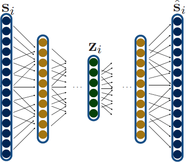
|
Tutorial on Graph Representation Learning
William L. Hamilton and Jian Tang AAAI Tutorial Forum 2019. slides (zip) |
|
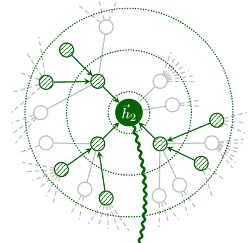
|
Deep Graph Infomax
Petar Velickovic, William Fedus, William L. Hamilton, Pietro Lio, Yoshua Bengio, and R Devon Hjelm. Proceedings of ICLR (to appear). 2018. pdf (arxiv) |
|
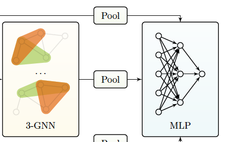
|
Weisfeiler and Leman Go Neural: Higher-order Graph Neural Networks
Christoper Morris, Martin Ritzert, Matthias Fey, William L. Hamilton, Jan Eric Lenssen, Gaurav Rattan, and Martin Grohe. Proceedings of AAAI. 2019. pdf (arxiv) |
2018
|
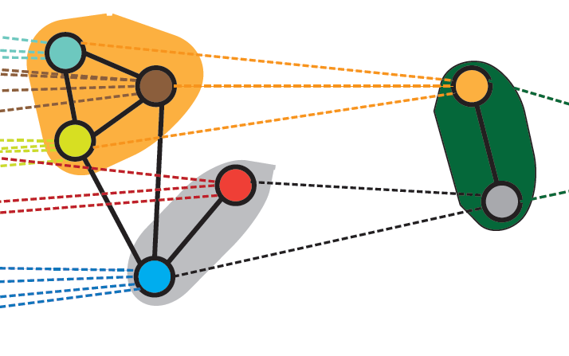
|
Hierarchical Graph Representation Learning with Differentiable Pooling Jiaxuan You, Rex Ying, Christopher Morris, Xiang Ren, William L. Hamilton, Jure Leskovec. Proceedings of NIPS. 2018. pdf (arxiv) |
|
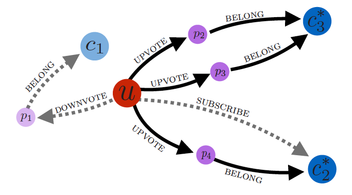
|
Embedding Logical Queries on Knowledge Graphs
William L. Hamilton, Marinka Zitnik, Payal Bajaj, Dan Jurafsky, Jure Leskovec. Proceedings of NIPS. 2018. pdf (arxiv) |

|
Compositional Fairness Constraints for Graph Embeddings
Joey Bose and William L. Hamilton. NIPS Relational Representation Learning Workshop. 2018. |
|
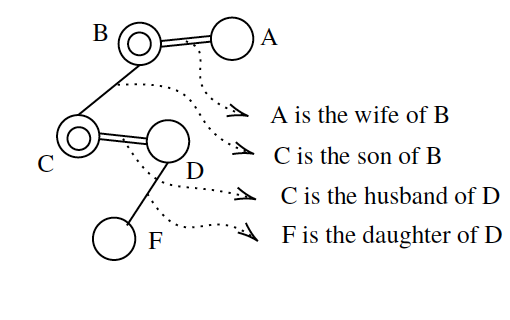
|
Compositional Language Understanding with Text-based Relational Reasoning
Koustuv Sinha, Shagun Sodhani, William L. Hamilton, and Joelle Pineau. NIPS Relational Representation Learning Workshop. 2018. |
|
|
Deep Graph Infomax
Petar Velickovic, William Fedus, William L. Hamilton, Pietro Lio, Yoshua Bengio, and R Devon Hjelm. NIPS Relational Representation Learning Workshop. 2018. |
|
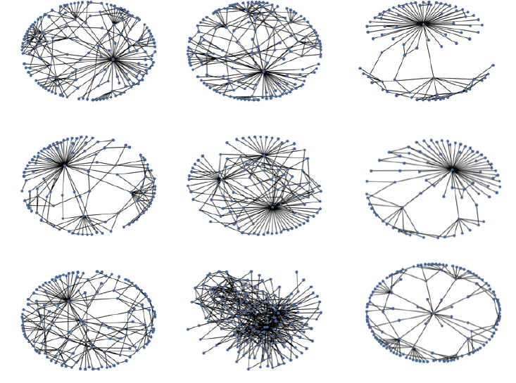
|
GraphRNN: A Deep Generative Model for Graphs
Jiaxuan You, Rex Ying, Xiang Ren, William L. Hamilton, Jure Leskovec. Proceedings of ICML. 2018. pdf (arxiv) |
|
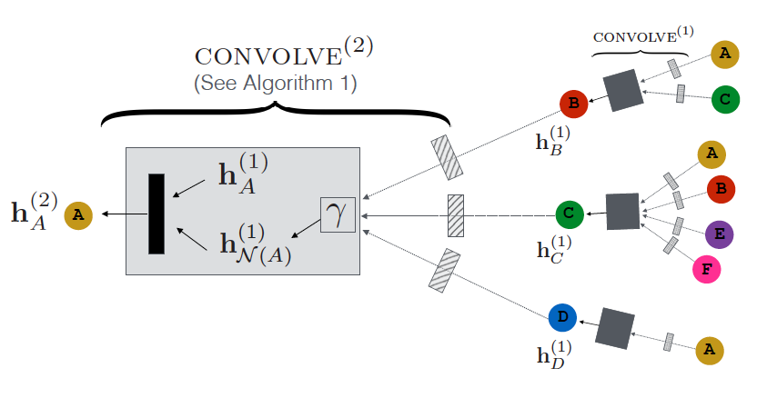
|
Graph Convolutional Neural Networks for Web-scale Recommender Systems
Rex Ying, Ruining He, Kaifeng Chen, Pong Eksombatchai, William L. Hamilton, Jure Leskovec. Proceedings of KDD. 2018. pdf (arxiv) |
|
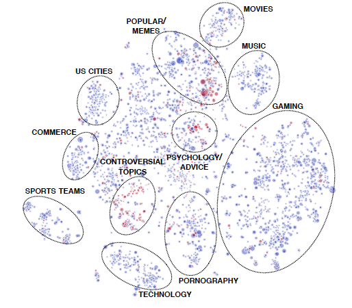
|
Community Interaction and Conflict on the Web
Srijan Kumar, William L. Hamilton, Jure Leskovec, Dan Jurafsky. Proceedings of The Web Conference (WWW). 2018. pdf (arxiv) project website (code + data) |
2017
|
|
Representation Learning on Graphs: Methods and Applications
William L. Hamilton, Rex Ying, Jure Leskovec. IEEE Data Engineering Bulletin. 2017. |
|
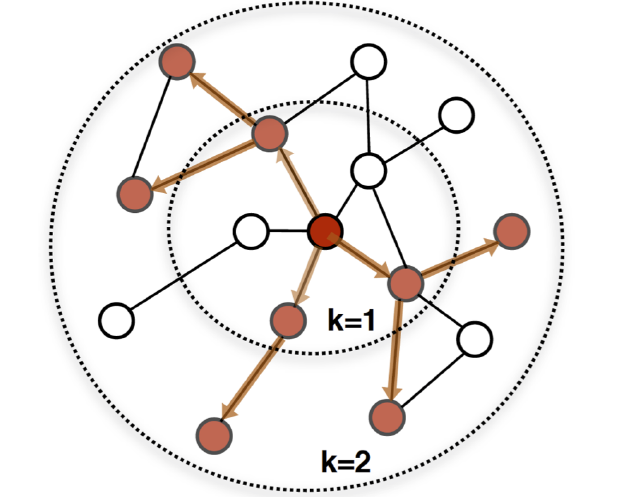
|
Inductive Representation Learning on Large Graphs
William L. Hamilton*, Rex Ying*, Jure Leskovec. Proceedings of NIPS. 2017. pdf project website (code+data) |
|
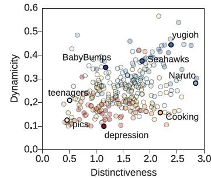
|
Community Identity and User Engagement in a
Multi-Community Landscape Justine Zhang*, William L. Hamilton*, Cristian Danescu-Niculescu-Mizil, Jure Leskovec, Dan Jurafsky. Proceedings of ICWSM. 2017. |
|
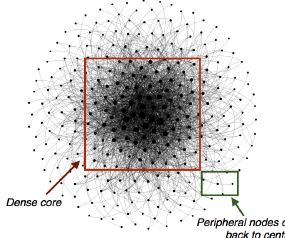
|
Loyalty in Online Communities
William L. Hamilton*, Justine Zhang*, Cristian Danescu-Niculescu-Mizil, Jure Leskovec, Dan Jurafsky. Proceedings of ICWSM (short paper). 2017. |
|
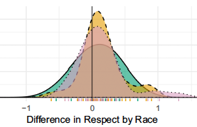
|
Language from Police Body Camera Footage Shows Racial Disparities in Officer Respect
Rob Voigt, Nicholas P. Camp, Vinod Prabhakaran, William L. Hamilton, Rebecca C. Hetey, Camilla M. Griffiths, David Jurgens, Dan Jurafsky, and Jennifer L. Eberhardt. Proceedings of the National Academy of Science (PNAS). 2017. |
2016
|
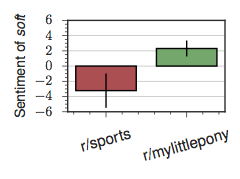
|
Inducing Domain-Specific Sentiment Lexicons from Unlabeled Corpora
William L. Hamilton, Kevin Clark, Jure Leskovec, Dan Jurafsky. Proceedings of EMNLP. 2016. pdf project website (code+data) |
|
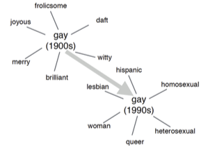
|
Cultural Shift or Linguistic Drift? Comparing Two Computational Models of Semantic Change
William L. Hamilton, Jure Leskovec, Dan Jurafsky. Proceedings of EMNLP. 2016. pdf project website (code+data) |
|
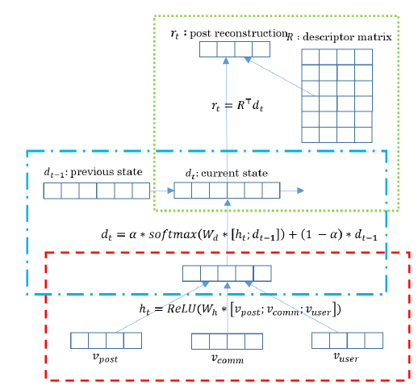
|
Learning Linguistic Descriptors of User Roles in Online Communities
Alex Wang, William L. Hamilton, Jure Leskovec. EMNLP Workshop on Computational Social Science (NLP+CSS). 2016. |
|
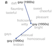 |
Diachronic Word Embeddings Reveal Statistical Laws of Semantic Change
William L. Hamilton, Jure Leskovec, Dan Jurafsky. Proceedings of ACL. 2016. pdf project website (code+data) |
|
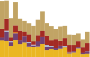
|
Predicting the Rise and Fall of Scientific Topics from Trends in their Rhetorical Framing
Vinodkumar Prabhakaran, William L. Hamilton, Dan McFarland, Dan Jurafsky. Proceedings of ACL. 2016. |
2014
|
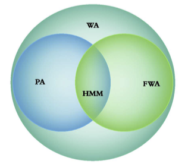
|
Compressed Predictive State Representation: An Efficient Moment-Method for Sequence Prediction and Sequential Decision Making
William L. Hamilton MSc Thesis. McGill University. Canadian AI Association (CAIAC) 2014 MSc Thesis Award |
|
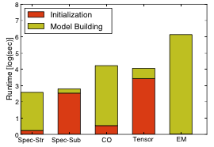
|
Methods of Moments for Learning Stochastic Languages: Unified Presentation and Empirical Comparison
Borja Balle*, William L. Hamilton*, Joelle Pineau Proceedings of ICML. 2014. |
|
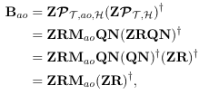
|
Efficient Learning and Planning with Compressed Predictive States
William L. Hamilton, Mahdi Milani Fard, Joelle Pineau. Journal of Machine Learning Research (JMLR). 2014. pdf code |
2013

|
Modelling Sparse Dynamical Systems with Compressed Predictive State Representations
William L. Hamilton, Mahdi Milani Fard, Joelle Pineau. Proceedings of ICML. 2013. pdf code |
COMP 551 --- Applied Machine Learning
In the Winter 2019 semester, I am teaching a graduate-level course on Applied Machine Learning at McGill. Check out the course website for more information.
William (Will) Hamilton is currently a Visiting Researcher at Fqcebook AI Research Montreal, and he will be joining McGill University as an Assistant Professor of Computer Science in January 2019. Will completed his PhD in Computer Science at Stanford University in 2018, working jointly in the NLP and SNAP groups, where he was co-advised by Dan Jurafsky and Jure Leskovec. His interests lie at the intersection of machine learning, network science, natural language processing, and computational social science. Will was the SAP Stanford Graduate Fellow, received the Cozzarelli Best Paper Award from the Proceedings of the National Academy of Sciences (PNAS) in 2017, and his work has been featured in numerous media outlets, including Wired, The New York Times, and The BBC.
Prior to Stanford, Will completed a BSc and MSc at McGill University, where he worked on reinforcement learning and machine learning theory in the Reasoning and Learning Lab under the supervision of Joelle Pineau. Will was awarded the Canadian AI MSc Thesis Award for his work at McGill and received an honorable mention for the CRA Undergraduate Researcher of the Year.
During the summers of 2013 and 2014, Will interned at Amazon as a software development engineer and research scientist, where he designed and implemented new algorithms to forecast demand for cloud computing services.